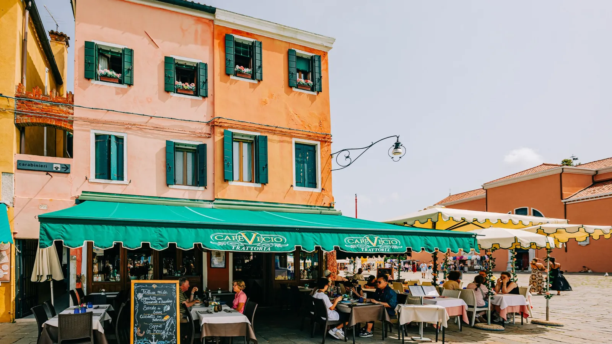

The short answer
For a mid-range trip, count about €130–200 per person per day in Italy, sharing a double room, eating in trattorias and using fast trains. A careful budget traveller can do €70–100; a comfortable trip with 4-star hotels, taxis and good restaurants is €300+. Flights are extra. Rome, Venice, Florence, Milan and the Amalfi Coast are the most expensive places; the South, Sicily and small towns cost noticeably less.
Daily budget per person
| Item | Budget | Mid-range | Comfort |
|---|---|---|---|
| Sleep (half a double room) | €30–45 | €50–80 | €120+ |
| Food and drink | €25–35 | €45–65 | €90+ |
| Local transport + trains | €5–15 | €15–30 | €40+ |
| Sights and museums | €5–15 | €15–25 | €40+ |
| Total per day | €70–100 | €130–200 | €300+ |
Indicative prices for big cities in November 2026. Subtract 20–30% in the South and in small towns; add 20–40% in Venice, on the Amalfi Coast and in July–August.
Accommodation and the tourist tax
Accommodation is the biggest cost. In Rome or Florence a good 3-star double usually costs €100–160 a night in spring and autumn, a simple B&B or guesthouse €70–110, a hostel bed €30–50. Venice and the Amalfi Coast are higher; Naples, Bologna, Puglia and Sicily lower. Book early for Easter, May–June, September and Christmas.
On top of the room you pay the tourist tax (imposta di soggiorno), almost always in cash at the hotel and per person per night. In Rome it goes from about €4 to €10 depending on the category (around €6 for a 3-star, €10 for a 5-star), for a maximum of 10 nights; Florence, Milan, Venice and Naples charge similar amounts, small towns often €1–3. Children are usually exempt. Booking sites often show it as "to pay at the property": it is not a scam.
Food and drink: what things really cost
| What | Typical price |
|---|---|
| Espresso at the bar, standing | €1.10–1.50 (Italian average about €1.30) |
| Cappuccino + cornetto (breakfast) | €3–4.50 |
| Slice of pizza al taglio / panino | €3–7 |
| Pizza margherita at a pizzeria | €7–12 |
| Trattoria dinner (pasta, main, house wine) | €30–45 per person |
| Aperitivo (spritz + snacks) | €8–14 |
| Gelato (2 flavours) | €3–4.50 |
| Water 1.5 l at the supermarket | €0.40–0.80 |
Three Italian habits change the bill. The coperto (cover charge, €1.50–4 per person) is legal if it is written on the menu. Sitting down costs more: the same coffee can cost three times as much at a table in Piazza San Marco or Piazza Navona than at the counter. And tipping is not expected: rounding up or leaving a couple of euros for good service is plenty. Read the menu before you sit, especially near the big sights: if it has no prices or photos of every dish, walk on.
Getting around
- High-speed trains (Frecciarossa, Italo): Rome–Florence or Florence–Venice from about €15–20 if booked weeks ahead, €45–60 on the day. Prices rise like airline fares, so book as soon as your dates are fixed. More in Trenitalia vs Italo.
- Regional trains have fixed, cheap prices (Florence–Pisa about €9, Naples–Pompeii a few euros) and need no booking.
- City transport: a single ticket in Rome or Milan is about €1.50–2.20; day passes are good value if you use the metro a lot.
- Airport transfers: Rome Fiumicino to the centre costs €14 by Leonardo Express or a fixed €55-ish taxi fare: see Fiumicino to Rome.
- Rental car: from €25–40 a day off-season, much more in August, plus fuel (among the most expensive in Europe), motorway tolls and parking. Only worth it for the countryside: car rental in Italy.
Museums and sights
| Sight | Adult ticket 2026 |
|---|---|
| Colosseum + Roman Forum + Palatine | €18 (Full Experience €24) |
| Vatican Museums + Sistine Chapel | €25 online |
| Uffizi Gallery, Florence | €25 at the desk, €29 online in high season (cheaper late afternoon) |
| Pantheon, Rome | €5 |
| Pompeii | €20 (since January 2026) |
| Churches (most of them) | free, some ask a few euros |
Many state museums and archaeological sites are free on the first Sunday of the month (expect queues), and under-18s enter free at state sites. Details in our Colosseum and Vatican tickets guide.
A real 7-day example
Two people, one week in May: 3 nights in Rome, 2 in Florence, 2 in Venice, mid-range.
| Item | For two |
|---|---|
| 7 nights, 3-star hotels and B&Bs | €900–1,100 |
| Tourist tax (7 nights × 2 people) | about €60–80 |
| 2 high-speed trains, booked early | €80–140 |
| Food, coffee, gelato, aperitivi | €700–900 |
| Colosseum, Vatican, Uffizi, Doge's Palace | about €200 |
| Local transport and vaporetto | €80–120 |
| Total (without flights) | about €2,000–2,500, so €140–180 per person per day |
12 ways to spend less
- Travel in April–May or October: same weather, hotels up to 30% cheaper than June–August.
- Book fast trains early: the cheapest fares go first.
- Have coffee and breakfast standing at the bar, like Italians.
- Eat your main meal at lunch: many trattorias have a fixed-price lunch menu.
- Do the aperitivo: with a drink you often get enough snacks for a light dinner.
- Refill your bottle at public fountains (Rome's nasoni are free and drinkable).
- Eat one street away from the big sights.
- Use regional trains for short trips: no booking, fixed prices.
- Pick the first Sunday of the month for one free state museum.
- Sleep in cheaper bases: Mestre for Venice, Bologna for day trips to Florence, Naples for Pompeii.
- Carry a little cash: tourist tax and small bars sometimes want it.
- Watch for train strikes and ZTL fines: the most expensive surprises of all.
Plan your trip without overspending
Some links are affiliate links: booking through them costs you nothing extra and helps keep 687 free.
Know the cost of every day before you leave.
In 687 Italy you plan the trip by stages, with trains, sights and the weather day by day, and strike alerts before they ruin a booked ticket. If plans change, NOW rebuilds the rest of the day.
Sources
- Turismo Roma (Roma Capitale) – Contributo di soggiorno
- Parco archeologico del Colosseo – tickets
- Gallerie degli Uffizi
- Pompeii archaeological park
- Trenitalia
Checked against these official sites in November 2026. Prices and rules can change: always confirm before you travel.